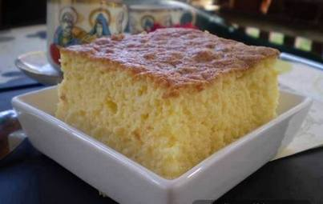

Koh
Vreme pripreme:45 minuta

Sastojci:
6 jaja
12 kasika secera
2 vanilin secera
12 kasika griza
1l mleka
Postupak spremanja: Umutiti penasto 6 belanca, dodati 6 kasika secera, pa 6 zumanaca i 12 kasika griza. Staviti u rernu da se pece a za to vreme skuvati 1.5l mleka sa 6 kasika secera i 2 vanilin secera.
Vas komentar:
Ovo je mesto za Vas komentar...